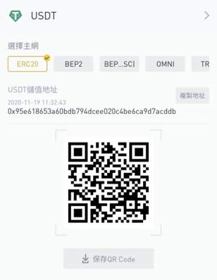
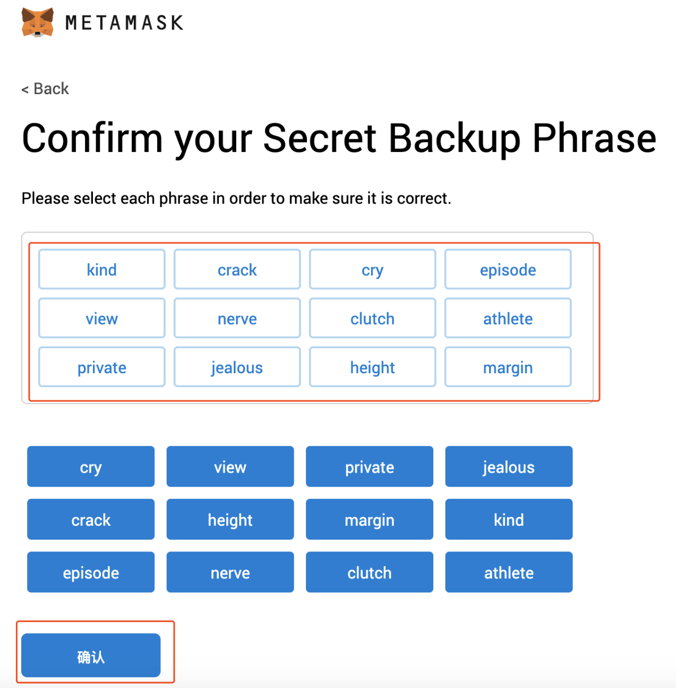
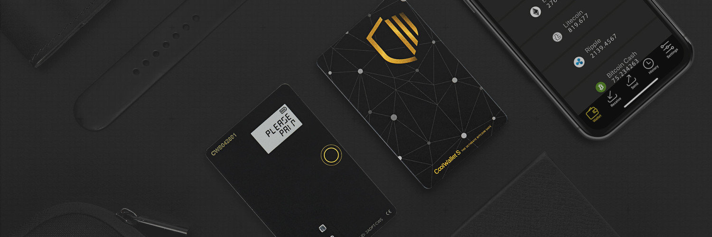

本篇適合人群：入門，好奇自己的錢包是如何運作的。
不知道你對你的加幣錢包了解多少？目前你放了多少比例的個人資產在電子化錢包裡面？會不會害怕一夜起來錢包就被駭客轉走？
這篇文章整理自我回應FB討論社團中有人對於加密貨幣錢包的詢問，討論串中可以看出大部分的人都對於加密貨幣錢包的了解很碎片化，有的人會說有分冷熱錢包、實體錢包一定安全、交易所錢包會被盜取等等。這樣零散的知識最容易面臨的情況是，很容易出現顛三倒四前後矛盾的情況。今天我想從最底層的結構來和你說明加密貨幣的錢包底層到底是甚麼，讓你下次跟親友高談闊論時有點”底”氣。👍
0和1的世界
你有沒有聽過一個說法，電腦的世界裡面，只有0和1。 所以，所有的私鑰最終都是0和1組成的，總共256位數的0和1，它大概長這樣： 010001111011101000111000……(256位) 神奇的事情來了，這把私鑰其實所有人都能找的到，看起來結構非常的簡單啊，因為就是一堆0和1啊(登愣！😵)但是為什麼你的錢包卻是安全的呢？
我們來算一下排列組合，256位數的0和1總共有多少種組合呢？如果高中數學課你有醒著的話😊，你可以算出2的256次方這個答案。換算一下可以得到10的77次方，給你一個參考物件，可見宇宙裡大約有10的80次方個原子，換句話說要猜到一個私鑰的難度，就像是在宇宙裡找到某一顆原子進行碰撞…就算有一秒算完整個地球原子的算力，要能找到宇宙中的特定一顆原子，恐怕也要幾千年的時間(和很好的運氣我想)。

Fun Fact，有鑑於私鑰就是0和1的組合，這裡有個很Hardcore的小哥用翻硬幣256次的方式來做私鑰😮
而這把私鑰也不會公開，當進行交易時還會進行多次的HASH加密演算法做加密，進行數位簽章，而256位0和1組合的HASH加密有多安全，可以看看3Blue1Brown的優秀講解，給你一個大概的感覺，我們大約需要「整個宇宙，每一個星系中，每一個星球上都住滿了人，每個人都擁有等同現在Google實驗室的運算力，算上40億年，有40億分之一的機會可以算出來。」
好，所以私鑰就是256個零和一，這個沒問題。
但我從來沒有看過我的私鑰是甚麼0和1啊？ 啊哈！我相信你根本沒看過這串數字，因為好心的錢包和交易所知道你看到這串數字會發瘋🤬，所以他們做了兩種事情。： 一、把私鑰藏起來，交易所錢包通常只給你看地址。因為你所有需要私鑰的動作，交易所都在他們的後端的伺服器幫你把問題解決了。如果你真的很想看自己的私鑰(到底在好奇甚麼…)你應該可以聯繫看看該客服有沒有導出私鑰的方式(我沒試過)。但他們本來幫你用伺服器保護好的私鑰就會經由好幾手送到你手上，真的不用去好奇….更大的可能是這些導出行為會危害系統穩定，不會這麼做的。
不過交易所錢包更可能的是，你的交易並沒有上到真正的區塊鏈去，只有在交易所的伺服器中運轉而已，因為區塊鏈上添加任何數據都不便宜，上鏈手續費划不來，交易所只要確保在自己的後端資料庫和你的交易相符，只有轉出該交易所的轉帳才會上鏈。不過這超過了本篇的範疇，有興趣可以用自己的以太坊地址上Etherscan查看看自己的地址到底有沒有鏈上記錄，比特幣則是要用Blockchain Explorer。 Etherscan：https://etherscan.io/ Blockchain Explorer：https://www.blockchain.com/explorer (話說我每次上這個網址都很慢，他們家伺服器可能對亞洲區網路優化不好?)
 交易所錢包，只會有地址而沒有私鑰(應該不會有人偷偷轉USDT給我吧😉)
二、註記詞(有興趣可以google: BIP-39)。如果你有開過錢包帳戶(Metamask、Trustwallet等等)你在註冊的時候都會給你一個英文隨堂考，要你記下來之後在考考你，考不過還會要重考。在你怨恨他勾起你痛苦的考試時光時，他其實是在幫你徹底地記住註記詞。
 來自Metamask官方考試說明
剛剛我為了要做示意圖，想說去截個圖片，手機端的App居然禁止了截圖功能，實在是…防作弊設想周到！👍
註記詞的英文單字是怎麼來的呢？你創建一個錢包時會得到的256位數的0101，它幫你切成12等分的10101000100，每一串0101都可以藉由一本”字典”BIP-39 English Word List (2048words)，換成一個英文單字。這樣你就會得到12個英文註記詞。其實還有一串增加安全性的導入隨機數啊、加鹽(對，就是Salt的鹽)的過程，這裡就先省略了。
MetaMask我剛實測可以導出私鑰，你在Chrome的MetaMask中點帳戶詳情>導出私鑰>輸入密碼，就能看到一串 80ef2e68a3056814d76115…………(對，這是我的錢包，但是裡面沒錢🤣)
這其實是64個，用”16進位”表示的01010100011000……如果有興趣的話就可以用它來算出你的256位數的0和1。這個就是你能帶著到處走都能將錢包復原的東西了。
這裡要注意一件事情，只記得助記詞，換了設備輸入同樣註記詞”可能”是沒辦法復原的！！部分錢包為了保證安全性，除了註記詞外，”可能”會在你的設備裡(手機or電腦)裡面存一小部分的Salt。幸運的話，就算你解除安裝App，他還是會留一個小檔案在文件夾之類的地方，至於具體存在哪裡，這個…可能要問錢包開發商。但如果你是手機壞掉那真的可能會悲劇，金額夠大的話或許可以求助資安公司把東西找回來….至於中心化的交易所，通常你都有KYC啦，只要你人還在、交易所沒倒應該都沒事。 另外比特幣、以太幣，或者其他幣種，在加密技術的使用上都有些微的差異，所以沒辦法混在一起用。不過跨鏈技術也正在進展當中。
冷錢包
你會發現上面的錢包中，交易所錢包有《你的錢包不是你的錢包》的情況。錢包軟體會有忘記註記詞的風險，另外如果你密碼存在電子化的任何設備也有被駭的風險。
於是「冷錢包」便應運而生。它平時不會連通網路，通常要用一定的物理開關才能進行啟動，它的密碼因為經過的轉手更少也更安全。 有時還有更酷炫的功能，假設一間公司管理一筆加密資產，如果密碼(私鑰)只有一個人知道的話當然很安全，但是當這個人出意外就麻煩了。那兩個人以上知道的話，洩密的時候又無法釐清事實。有些冷錢包可以做到要達到特定授權人數才能再次開啟的設計，或者一些特定時間到了才能激活的冷錢包(數位遺產)。或者再將冷錢包放進傳統銀行保險箱等作法。
 CoolbitX家出的冷錢包，我個人是覺得是最好看的一款
不過這些並不是我目前主要研究的範圍，所以我目前先停在這裡了。台灣最有名的冷錢包當屬CoolBitX、很大間但是前陣子出現隱私風波的Ledger、熱錢包想擴大戰場的ImToken。可以去了解看看。
小結
看到這裡先幫你自己還有幫我拍個手，希望大家都能為自己的財產安全多用點心啦，每次看到詐騙新聞真的是搖頭扶額。
大部分人依然是使用交易所錢包的，既然會有你的錢包不是你的錢包的情況(有夠繞舌)我們就需要謹慎選擇交易所，關於如何挑選交易所請參考我另一篇文章：
如何選擇交易所，是什麼讓你不敢投入？ 本文參考： 由密碼龐克台灣翻譯的《精通比特幣第二版》，主要參考了第四章<私鑰和地址>、第五章<錢包>，書可以線上看，很佛。